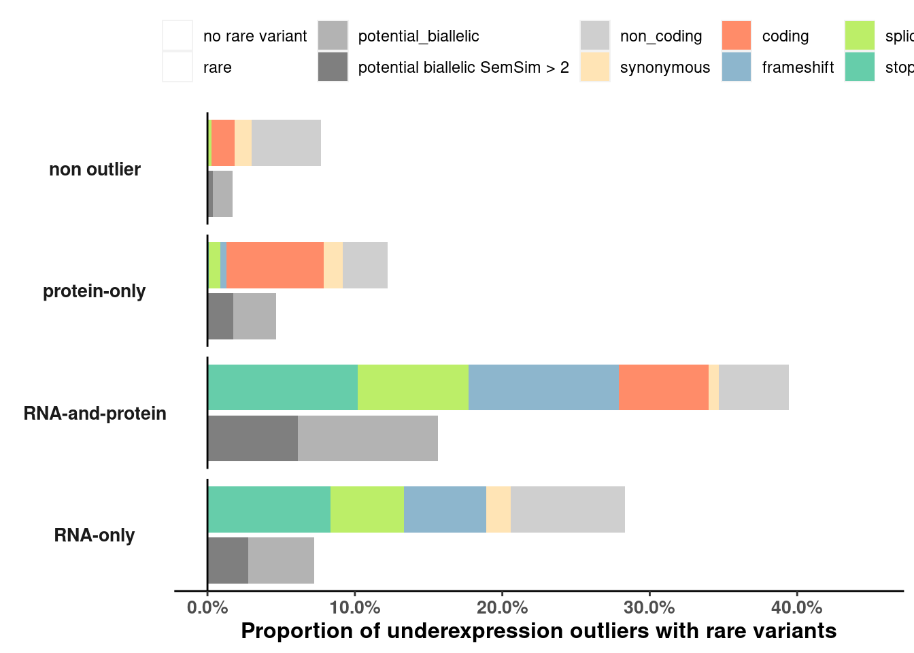
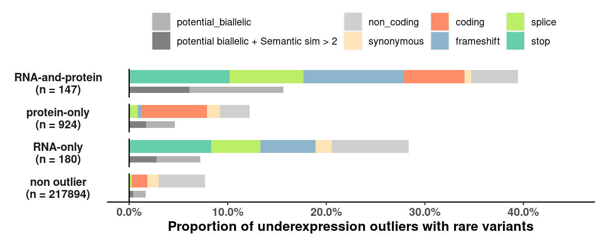

source('src/config.R')
# READ ANNOTATION
# sa <- read_tsv('/s/project/mitoMultiOmics/proteome_analysis/raw_data/proteomics_annotation.tsv') %>% as.data.table()
sa <- as.data.table(read_tsv(snakemake@input$sa) )
sa <- sa[USE_FOR_PROTEOMICS_PAPER == T]
# Read Proportions for rare variant types
pr <- fread(snakemake@input$enrichments_proportions)
# pr <- fread("/s/project/mitoMultiOmics/multiOMICs_integration/raw_data/variant_type_enr_prop.tsv")
pr <- pr[up_down_outlier %in% c("RNA_underexpression", "Protein_underexpression", "RNA_Protein_underexpression", "non_outlier")]
pr <- pr[, c("up_down_outlier", "var_type", "prop", "total")]
pr[, type := "var_type"]
# Read Proportions for rare and biallelic variants
p_pb <- fread(snakemake@input$proportions_rare_bi)
# p_pb <- fread("/s/project/mitoMultiOmics/multiOMICs_integration/processed_data/variant_tables/proportions_rare_biallelic.txt")
p_pb <- p_pb[up_down_outlier %in% c("RNA_underexpression", "Protein_underexpression", "RNA_Protein_underexpression", "non_outlier")]
p_pb <- p_pb[, c("up_down_outlier", "var_type", "prop", "total")]
p_pb[, type := "pb"]
p_pb[var_type == "rare", var_type := "rare " ]
#combine
px <- rbind(pr, p_pb)
px[, var_type := factor(var_type, levels = c("no rare variant", "rare", "rare ",
"potential_biallelic", "potential biallelic SemSim > 2",
"non_coding", "synonymous", "coding", "frameshift", "splice", "stop"))]
# unique(px$up_down_outlier)
px[up_down_outlier == "RNA_Protein_underexpression", up_down_outlier := "RNA-and-protein"]
px[up_down_outlier == "Protein_underexpression" , up_down_outlier := "protein-only" ]
px[up_down_outlier == "RNA_underexpression" , up_down_outlier := "RNA-only" ]
px[up_down_outlier == "non_outlier", up_down_outlier := "non outlier"]
px[, outlier_class_label := paste0(up_down_outlier, "\n", "(n = ", total, ")") ]
# unique(px$outlier_class_label)
px$outlier_class_label <- factor(px$outlier_class_label ,
levels = c( "RNA-and-protein\n(n = 144)",
"protein-only\n(n = 922)",
"RNA-only\n(n = 166)",
"non outlier\n(n = 216022)" ))
ggplot(px, aes(type, prop)) +
geom_bar(stat= 'identity', aes(fill = var_type)) +
geom_hline(yintercept = 0, colour = "black") +
scale_fill_manual(values = variant_colors ) +
coord_flip(ylim = c(0, 0.45)) +
scale_y_continuous(breaks=seq(0, 0.45, 0.1), labels=scales::percent) +
labs( y = "Proportion of underexpression outliers with rare variants")+
facet_wrap(~up_down_outlier, nrow= 4, strip.position = "left")+
#theme_void()+
theme(legend.position="top",
axis.title.y = element_blank() ,
axis.text.y = element_blank(),
axis.ticks.y = element_blank(),
axis.title.x = element_text(face="bold", size=12) ,
axis.text.x = element_text(size=10, face="bold") ,
axis.line.x.bottom = element_line(colour = "black"),
panel.grid.major = element_blank(),
panel.grid.minor = element_blank(),
panel.border = element_blank(),
panel.background = element_blank(),
legend.direction = "horizontal",
legend.title = element_blank(),
strip.background = element_blank(),
strip.text.y.left = element_text(face="bold", angle = 0, size=10),
plot.background = element_rect( fill = "white"))

Fig2e <- ggplot(px, aes(type, prop)) +
geom_bar(stat= 'identity', aes(fill = var_type)) +
geom_hline(yintercept = 0, colour = "black") +
scale_fill_manual(values = variant_colors ) +
coord_flip(ylim = c(0, 0.45)) +
scale_y_continuous(breaks=seq(0, 0.45, 0.1), labels=scales::percent) +
labs( y = "Proportion of underexpression outliers with rare variants")+
facet_wrap(~outlier_class_label, nrow= 4, strip.position = "left")+
#theme_void()+
theme(legend.position="top",
axis.title.y = element_blank() ,
axis.text.y = element_blank(),
axis.ticks.y = element_blank(),
axis.title.x = element_text(face="bold", size=12) ,
axis.text.x = element_text(size=10, face="bold") ,
axis.line.x.bottom = element_line(colour = "black"),
panel.grid.major = element_blank(),
panel.grid.minor = element_blank(),
panel.border = element_blank(),
panel.background = element_blank(),
legend.direction = "horizontal",
legend.title = element_blank(),
strip.background = element_blank(),
strip.text.y.left = element_text(face="bold", angle = 0, size=10),
plot.background = element_rect( fill = "white"))
Fig2e

pdf(snakemake@output$fig, # "/s/project/mitoMultiOmics/multiOMICs_integration/Figures/Fig2_e.pdf",
width = 7.5, height = 3, useDingbats=FALSE )
print(Fig2e)
dev.off()
## png
## 2
IyctLS0KIycgdGl0bGU6IEZpZ3VyZSAyZQojJyBhdXRob3I6IHNtaXJub3ZkCiMnIHdiOgojJyAgaW5wdXQ6CiMnICAtIHNhOiAnYHNtIGNvbmZpZ1siUkFXX0RBVEEiXSArICIvcHJvdGVvbWljc19hbm5vdGF0aW9uLnRzdiJgJwojJyAgLSBlbnJpY2htZW50c19wcm9wb3J0aW9uczogJ2BzbSBjb25maWdbIlJBV19EQVRBIl0gKyAiL3ZhcmlhbnRfdHlwZV9lbnJfcHJvcC50c3YiYCcKIycgIC0gcHJvcG9ydGlvbnNfcmFyZV9iaTogJ2BzbSBjb25maWdbIlBST0NfREFUQSJdICsgIi92YXJpYW50X3RhYmxlcy9wcm9wb3J0aW9uc19yYXJlX2JpYWxsZWxpYy50eHQiYCcKIycgIG91dHB1dDoKIycgIC0gZmlnOiAnYHNtIGNvbmZpZ1siRklHVVJFX0RJUiJdICsgIi9GaWcyX2UucGRmImAnCiMnIG91dHB1dDogCiMnICAgaHRtbF9kb2N1bWVudDoKIycgICAgY29kZV9mb2xkaW5nOiBoaWRlCiMnICAgIGNvZGVfZG93bmxvYWQ6IFRSVUUKIyctLS0KCgpzb3VyY2UoJ3NyYy9jb25maWcuUicpCgojIFJFQUQgQU5OT1RBVElPTgojIHNhIDwtIHJlYWRfdHN2KCcvcy9wcm9qZWN0L21pdG9NdWx0aU9taWNzL3Byb3Rlb21lX2FuYWx5c2lzL3Jhd19kYXRhL3Byb3Rlb21pY3NfYW5ub3RhdGlvbi50c3YnKSAlPiUgYXMuZGF0YS50YWJsZSgpCnNhIDwtIGFzLmRhdGEudGFibGUocmVhZF90c3Yoc25ha2VtYWtlQGlucHV0JHNhKSApCnNhIDwtIHNhW1VTRV9GT1JfUFJPVEVPTUlDU19QQVBFUiA9PSBUXQoKCiMgUmVhZCBQcm9wb3J0aW9ucyBmb3IgcmFyZSB2YXJpYW50IHR5cGVzCnByIDwtIGZyZWFkKHNuYWtlbWFrZUBpbnB1dCRlbnJpY2htZW50c19wcm9wb3J0aW9ucykKIyBwciA8LSBmcmVhZCgiL3MvcHJvamVjdC9taXRvTXVsdGlPbWljcy9tdWx0aU9NSUNzX2ludGVncmF0aW9uL3Jhd19kYXRhL3ZhcmlhbnRfdHlwZV9lbnJfcHJvcC50c3YiKQpwciA8LSBwclt1cF9kb3duX291dGxpZXIgJWluJSBjKCJSTkFfdW5kZXJleHByZXNzaW9uIiwgIlByb3RlaW5fdW5kZXJleHByZXNzaW9uIiwgIlJOQV9Qcm90ZWluX3VuZGVyZXhwcmVzc2lvbiIsICJub25fb3V0bGllciIpXQpwciA8LSBwclssIGMoInVwX2Rvd25fb3V0bGllciIsICJ2YXJfdHlwZSIsICJwcm9wIiwgInRvdGFsIildCnByWywgdHlwZSA6PSAidmFyX3R5cGUiXQoKCiMgUmVhZCBQcm9wb3J0aW9ucyBmb3IgcmFyZSBhbmQgYmlhbGxlbGljIHZhcmlhbnRzCnBfcGIgPC0gZnJlYWQoc25ha2VtYWtlQGlucHV0JHByb3BvcnRpb25zX3JhcmVfYmkpCiMgcF9wYiA8LSBmcmVhZCgiL3MvcHJvamVjdC9taXRvTXVsdGlPbWljcy9tdWx0aU9NSUNzX2ludGVncmF0aW9uL3Byb2Nlc3NlZF9kYXRhL3ZhcmlhbnRfdGFibGVzL3Byb3BvcnRpb25zX3JhcmVfYmlhbGxlbGljLnR4dCIpCnBfcGIgPC0gcF9wYlt1cF9kb3duX291dGxpZXIgJWluJSBjKCJSTkFfdW5kZXJleHByZXNzaW9uIiwgIlByb3RlaW5fdW5kZXJleHByZXNzaW9uIiwgIlJOQV9Qcm90ZWluX3VuZGVyZXhwcmVzc2lvbiIsICJub25fb3V0bGllciIpXQpwX3BiIDwtIHBfcGJbLCBjKCJ1cF9kb3duX291dGxpZXIiLCAidmFyX3R5cGUiLCAicHJvcCIsICJ0b3RhbCIpXQpwX3BiWywgdHlwZSA6PSAicGIiXQpwX3BiW3Zhcl90eXBlID09ICJyYXJlIiwgdmFyX3R5cGUgOj0gInJhcmUgIiBdCgojY29tYmluZQpweCA8LSByYmluZChwciwgcF9wYikKCgpweFssIHZhcl90eXBlIDo9IGZhY3Rvcih2YXJfdHlwZSwgbGV2ZWxzID0gYygibm8gcmFyZSB2YXJpYW50IiwgInJhcmUiLCAicmFyZSAiLAogICAgICAgICAgICAgICAgICAgICAgICAgICAgICAgICAgICAgICAgICAgICAicG90ZW50aWFsX2JpYWxsZWxpYyIsICJwb3RlbnRpYWwgYmlhbGxlbGljIFNlbVNpbSA+IDIiLCAKICAgICAgICAgICAgICAgICAgICAgICAgICAgICAgICAgICAgICAgICAgICAgIm5vbl9jb2RpbmciLCAic3lub255bW91cyIsICJjb2RpbmciLCAiZnJhbWVzaGlmdCIsICJzcGxpY2UiLCAic3RvcCIpKV0KCgojIHVuaXF1ZShweCR1cF9kb3duX291dGxpZXIpCnB4W3VwX2Rvd25fb3V0bGllciA9PSAiUk5BX1Byb3RlaW5fdW5kZXJleHByZXNzaW9uIiwgdXBfZG93bl9vdXRsaWVyIDo9ICAiUk5BLWFuZC1wcm90ZWluIl0KcHhbdXBfZG93bl9vdXRsaWVyID09ICJQcm90ZWluX3VuZGVyZXhwcmVzc2lvbiIgLCB1cF9kb3duX291dGxpZXIgOj0gInByb3RlaW4tb25seSIgXQpweFt1cF9kb3duX291dGxpZXIgPT0gIlJOQV91bmRlcmV4cHJlc3Npb24iICwgdXBfZG93bl9vdXRsaWVyIDo9ICJSTkEtb25seSIgXQpweFt1cF9kb3duX291dGxpZXIgPT0gIm5vbl9vdXRsaWVyIiwgdXBfZG93bl9vdXRsaWVyIDo9ICAibm9uIG91dGxpZXIiXQoKCnB4Wywgb3V0bGllcl9jbGFzc19sYWJlbCA6PSBwYXN0ZTAodXBfZG93bl9vdXRsaWVyLCAiXG4iLCAiKG4gPSAiLCB0b3RhbCwgIikiKSBdCiMgdW5pcXVlKHB4JG91dGxpZXJfY2xhc3NfbGFiZWwpCnB4JG91dGxpZXJfY2xhc3NfbGFiZWwgPC0gZmFjdG9yKHB4JG91dGxpZXJfY2xhc3NfbGFiZWwgLCAKICAgICAgICAgICAgICAgICAgICAgICAgICAgICAgICAgbGV2ZWxzID0gYyggIlJOQS1hbmQtcHJvdGVpblxuKG4gPSAxNDQpIiwKICAgICAgICAgICAgICAgICAgICAgICAgICAgICAgICAgICAgICAgICAgICAgInByb3RlaW4tb25seVxuKG4gPSA5MjIpIiwgCiAgICAgICAgICAgICAgICAgICAgICAgICAgICAgICAgICAgICAgICAgICAgICJSTkEtb25seVxuKG4gPSAxNjYpIiwKICAgICAgICAgICAgICAgICAgICAgICAgICAgICAgICAgICAgICAgICAgICAgIm5vbiBvdXRsaWVyXG4obiA9IDIxNjAyMikiICkpICAKCgpnZ3Bsb3QocHgsIGFlcyh0eXBlLCBwcm9wKSkgKyAKICBnZW9tX2JhcihzdGF0PSAnaWRlbnRpdHknLCBhZXMoZmlsbCA9IHZhcl90eXBlKSkgKyAKICBnZW9tX2hsaW5lKHlpbnRlcmNlcHQgPSAwLCBjb2xvdXIgPSAiYmxhY2siKSArIAogIHNjYWxlX2ZpbGxfbWFudWFsKHZhbHVlcyA9IHZhcmlhbnRfY29sb3JzICApICsgCiAgY29vcmRfZmxpcCh5bGltID0gYygwLCAwLjQ1KSkgKwogIHNjYWxlX3lfY29udGludW91cyhicmVha3M9c2VxKDAsIDAuNDUsIDAuMSksIGxhYmVscz1zY2FsZXM6OnBlcmNlbnQpICsKICBsYWJzKCB5ID0gIlByb3BvcnRpb24gb2YgdW5kZXJleHByZXNzaW9uIG91dGxpZXJzIHdpdGggcmFyZSB2YXJpYW50cyIpKwogIAogIGZhY2V0X3dyYXAofnVwX2Rvd25fb3V0bGllciwgIG5yb3c9IDQsIHN0cmlwLnBvc2l0aW9uID0gImxlZnQiKSsKICAjdGhlbWVfdm9pZCgpKwogIHRoZW1lKGxlZ2VuZC5wb3NpdGlvbj0idG9wIiwgIAogICAgICAgIGF4aXMudGl0bGUueSA9IGVsZW1lbnRfYmxhbmsoKSAsCiAgICAgICAgYXhpcy50ZXh0LnkgPSBlbGVtZW50X2JsYW5rKCksCiAgICAgICAgYXhpcy50aWNrcy55ID0gZWxlbWVudF9ibGFuaygpLAogICAgICAgIAogICAgICAgIGF4aXMudGl0bGUueCA9IGVsZW1lbnRfdGV4dChmYWNlPSJib2xkIiwgc2l6ZT0xMikgLAogICAgICAgIGF4aXMudGV4dC54ID0gZWxlbWVudF90ZXh0KHNpemU9MTAsIGZhY2U9ImJvbGQiKSAsCiAgICAgICAgCiAgICAgICAgCiAgICAgICAgYXhpcy5saW5lLnguYm90dG9tID0gIGVsZW1lbnRfbGluZShjb2xvdXIgPSAiYmxhY2siKSwKICAgICAgICAKICAgICAgICAKICAgICAgICBwYW5lbC5ncmlkLm1ham9yID0gZWxlbWVudF9ibGFuaygpLCAKICAgICAgICBwYW5lbC5ncmlkLm1pbm9yID0gZWxlbWVudF9ibGFuaygpLAogICAgICAgIHBhbmVsLmJvcmRlciA9IGVsZW1lbnRfYmxhbmsoKSwKICAgICAgICBwYW5lbC5iYWNrZ3JvdW5kID0gZWxlbWVudF9ibGFuaygpLAogICAgICAgIAogICAgICAgIAogICAgICAgIAogICAgICAgIGxlZ2VuZC5kaXJlY3Rpb24gPSAiaG9yaXpvbnRhbCIsIAogICAgICAgIGxlZ2VuZC50aXRsZSA9IGVsZW1lbnRfYmxhbmsoKSwKICAgICAgICAKICAgICAgICBzdHJpcC5iYWNrZ3JvdW5kID0gZWxlbWVudF9ibGFuaygpLAogICAgICAgIHN0cmlwLnRleHQueS5sZWZ0ID0gZWxlbWVudF90ZXh0KGZhY2U9ImJvbGQiLCBhbmdsZSA9IDAsIHNpemU9MTApLAogICAgICAgIHBsb3QuYmFja2dyb3VuZCA9IGVsZW1lbnRfcmVjdCggZmlsbCA9ICJ3aGl0ZSIpKSAKCgoKRmlnMmUgPC0gZ2dwbG90KHB4LCBhZXModHlwZSwgcHJvcCkpICsgCiAgZ2VvbV9iYXIoc3RhdD0gJ2lkZW50aXR5JywgYWVzKGZpbGwgPSB2YXJfdHlwZSkpICsgCiAgZ2VvbV9obGluZSh5aW50ZXJjZXB0ID0gMCwgY29sb3VyID0gImJsYWNrIikgKyAKICBzY2FsZV9maWxsX21hbnVhbCh2YWx1ZXMgPSB2YXJpYW50X2NvbG9ycyAgKSArIAogIGNvb3JkX2ZsaXAoeWxpbSA9IGMoMCwgMC40NSkpICsKICBzY2FsZV95X2NvbnRpbnVvdXMoYnJlYWtzPXNlcSgwLCAwLjQ1LCAwLjEpLCBsYWJlbHM9c2NhbGVzOjpwZXJjZW50KSArCiAgbGFicyggeSA9ICJQcm9wb3J0aW9uIG9mIHVuZGVyZXhwcmVzc2lvbiBvdXRsaWVycyB3aXRoIHJhcmUgdmFyaWFudHMiKSsKICAKICBmYWNldF93cmFwKH5vdXRsaWVyX2NsYXNzX2xhYmVsLCAgbnJvdz0gNCwgc3RyaXAucG9zaXRpb24gPSAibGVmdCIpKwogICN0aGVtZV92b2lkKCkrCiAgdGhlbWUobGVnZW5kLnBvc2l0aW9uPSJ0b3AiLCAgCiAgICAgICAgYXhpcy50aXRsZS55ID0gZWxlbWVudF9ibGFuaygpICwKICAgICAgICBheGlzLnRleHQueSA9IGVsZW1lbnRfYmxhbmsoKSwKICAgICAgICBheGlzLnRpY2tzLnkgPSBlbGVtZW50X2JsYW5rKCksCiAgICAgICAgCiAgICAgICAgYXhpcy50aXRsZS54ID0gZWxlbWVudF90ZXh0KGZhY2U9ImJvbGQiLCBzaXplPTEyKSAsCiAgICAgICAgYXhpcy50ZXh0LnggPSBlbGVtZW50X3RleHQoc2l6ZT0xMCwgZmFjZT0iYm9sZCIpICwKICAgICAgICAKICAgICAgICAKICAgICAgICBheGlzLmxpbmUueC5ib3R0b20gPSAgZWxlbWVudF9saW5lKGNvbG91ciA9ICJibGFjayIpLAogICAgICAgIAoKICAgICAgICBwYW5lbC5ncmlkLm1ham9yID0gZWxlbWVudF9ibGFuaygpLCAKICAgICAgICBwYW5lbC5ncmlkLm1pbm9yID0gZWxlbWVudF9ibGFuaygpLAogICAgICAgIHBhbmVsLmJvcmRlciA9IGVsZW1lbnRfYmxhbmsoKSwKICAgICAgICBwYW5lbC5iYWNrZ3JvdW5kID0gZWxlbWVudF9ibGFuaygpLAoKICAgICAgICAKICAgICAgICAKICAgICAgICBsZWdlbmQuZGlyZWN0aW9uID0gImhvcml6b250YWwiLCAKICAgICAgICBsZWdlbmQudGl0bGUgPSBlbGVtZW50X2JsYW5rKCksCiAgICAgICAgCiAgICAgICAgc3RyaXAuYmFja2dyb3VuZCA9IGVsZW1lbnRfYmxhbmsoKSwKICAgICAgICBzdHJpcC50ZXh0LnkubGVmdCA9IGVsZW1lbnRfdGV4dChmYWNlPSJib2xkIiwgYW5nbGUgPSAwLCBzaXplPTEwKSwKICAgICAgICBwbG90LmJhY2tncm91bmQgPSBlbGVtZW50X3JlY3QoIGZpbGwgPSAid2hpdGUiKSkgCgojKyBmaWcud2lkdGg9Ny41LCBmaWcuaGVpZ2h0PTMKRmlnMmUKCnBkZihzbmFrZW1ha2VAb3V0cHV0JGZpZywgIyAiL3MvcHJvamVjdC9taXRvTXVsdGlPbWljcy9tdWx0aU9NSUNzX2ludGVncmF0aW9uL0ZpZ3VyZXMvRmlnMl9lLnBkZiIsICAKICAgIHdpZHRoID0gNy41LCBoZWlnaHQgPSAzLCAgdXNlRGluZ2JhdHM9RkFMU0UgKQpwcmludChGaWcyZSkgCmRldi5vZmYoKQoKCg==